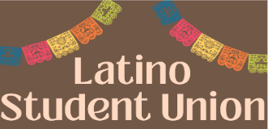
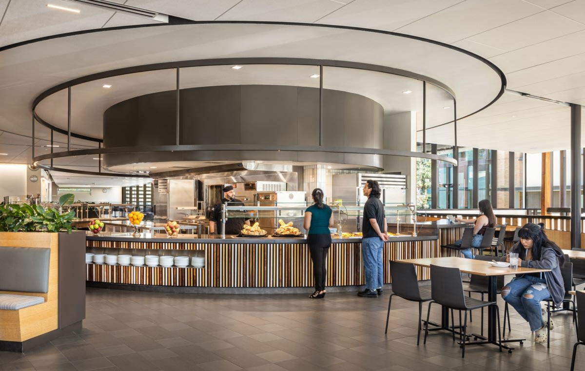
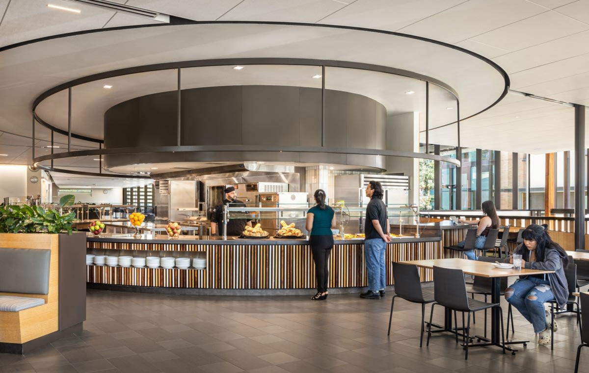
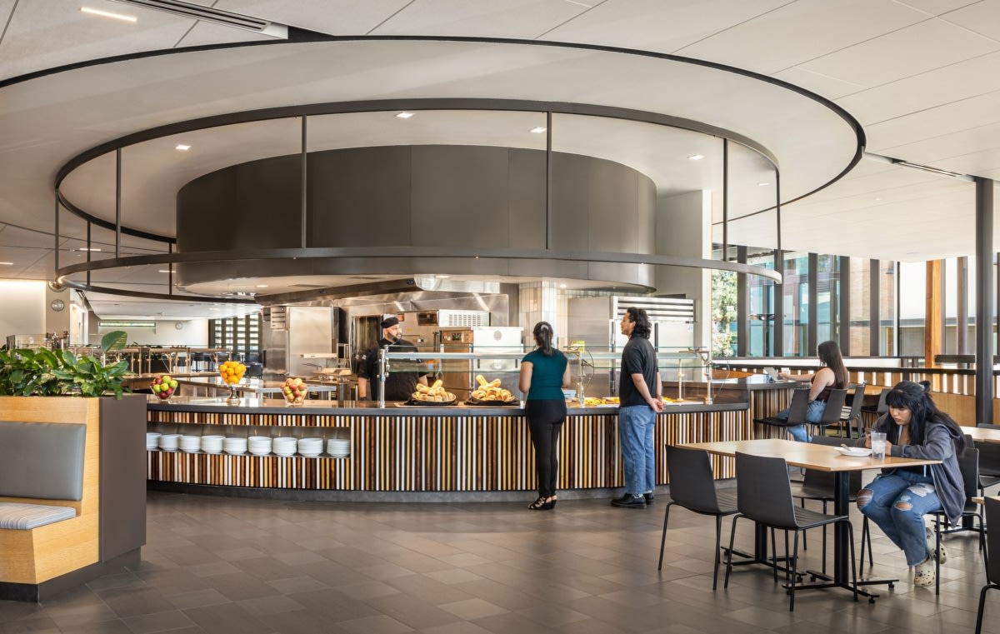

Isla Holguin
Hello my name is Isla Holguin, I am a student currently enrolled at the University of California, Riverside (UCR), where I am aiming to get a Bachelor's degree in Business Administration. In my business degree I am looking forward to having a concentration in accounting. From here I would aim for my CPA license after graduating. I am a dedicated and driven individual with a strong commitment to personal and professional growth. Although I am a student at UCR that is not the only thing I do, I work a part time job at University of Riverside and occasionally work on my own by babysitting or dog sitting. Here I manage my time to get my work from school done along with getting my other responsibilities done. To further my work ethic, I have been working on getting an internship over the summer, hopefully giving me that edge of experience most careers look for. I have done my research online and know a few individuals who can help me on my journey.
Beyond my professional and academic life, I like to learn financial habits on my own, or with the help of my cousin who is also a business major. I also have been trying to make a habit of reading nonfiction books for about 30 minutes a day. I have also been trying to make a habit of comprehending the stock market and learning more about bank investments, small things like these get me invested into researching more. I also like doing my own research on how other accountants made it to where they are now, to what firms I should apply to and overall setting up my plans after college. I am comfortable with my career choice and am eager to learn more about my major, and as I take other breadth classes at UCR I get more intrigued with other related business opportunities that come by. For example I have been debating getting a minor in Economics, I have been taking a class this quarter and it has started to make me want to open more to other business opportunities that stand. Overall, I am intrigued to learn more and play a bigger part in the business life; I would like to get even more involved with financial involvement.
In summary I am an eager student, ready to learn more and take on any challenge. I am a motivated student with a strong work ethic and have a strong desire to learn more about the world of finance. If given a chance I am willing to show my skills and prove I can be an asset to the team. I'm passionate about finance and accounting, and am hoping this coming summer to gain some hands-on experience as a financial assistant at a local accounting firm, or get some entail on what it’s like to work as an accountant. I am very much looking forward to a promising future. If there are any questions, comments, or concerns please let me know, I appreciate your time, and thank you.
Hello my name is Isla Holguin, I am a student currently enrolled at the University of California, Riverside (UCR), where I am aiming to get a Bachelor's degree in Business Administration. In my business degree I am looking forward to having a concentration in accounting. From here I would aim for my CPA license after graduating. I am a dedicated and driven individual with a strong commitment to personal and professional growth. Although I am a student at UCR that is not the only thing I do, I work a part time job at University of Riverside and occasionally work on my own by babysitting or dog sitting. Here I manage my time to get my work from school done along with getting my other responsibilities done. To further my work ethic, I have been working on getting an internship over the summer, hopefully giving me that edge of experience most careers look for. I have done my research online and know a few individuals who can help me on my journey.
Beyond my professional and academic life, I like to learn financial habits on my own, or with the help of my cousin who is also a business major. I also have been trying to make a habit of reading nonfiction books for about 30 minutes a day. I have also been trying to make a habit of comprehending the stock market and learning more about bank investments, small things like these get me invested into researching more. I also like doing my own research on how other accountants made it to where they are now, to what firms I should apply to and overall setting up my plans after college. I am comfortable with my career choice and am eager to learn more about my major, and as I take other breadth classes at UCR I get more intrigued with other related business opportunities that come by. For example I have been debating getting a minor in Economics, I have been taking a class this quarter and it has started to make me want to open more to other business opportunities that stand. Overall, I am intrigued to learn more and play a bigger part in the business life; I would like to get even more involved with financial involvement.
In summary I am an eager student, ready to learn more and take on any challenge. I am a motivated student with a strong work ethic and have a strong desire to learn more about the world of finance. If given a chance I am willing to show my skills and prove I can be an asset to the team. I'm passionate about finance and accounting, and am hoping this coming summer to gain some hands-on experience as a financial assistant at a local accounting firm, or get some entail on what it’s like to work as an accountant. I am very much looking forward to a promising future. If there are any questions, comments, or concerns please let me know, I appreciate your time, and thank you.
Hello my name is Isla Holguin, I am a student currently enrolled at the University of California, Riverside (UCR), where I am aiming to get a Bachelor's degree in Business Administration. In my business degree I am looking forward to having a concentration in accounting. From here I would aim for my CPA license after graduating. I am a dedicated and driven individual with a strong commitment to personal and professional growth. Although I am a student at UCR that is not the only thing I do, I work a part time job at University of Riverside and occasionally work on my own by babysitting or dog sitting. Here I manage my time to get my work from school done along with getting my other responsibilities done. To further my work ethic, I have been working on getting an internship over the summer, hopefully giving me that edge of experience most careers look for. I have done my research online and know a few individuals who can help me on my journey.
Beyond my professional and academic life, I like to learn financial habits on my own, or with the help of my cousin who is also a business major. I also have been trying to make a habit of reading nonfiction books for about 30 minutes a day. I have also been trying to make a habit of comprehending the stock market and learning more about bank investments, small things like these get me invested into researching more. I also like doing my own research on how other accountants made it to where they are now, to what firms I should apply to and overall setting up my plans after college. I am comfortable with my career choice and am eager to learn more about my major, and as I take other breadth classes at UCR I get more intrigued with other related business opportunities that come by. For example I have been debating getting a minor in Economics, I have been taking a class this quarter and it has started to make me want to open more to other business opportunities that stand. Overall, I am intrigued to learn more and play a bigger part in the business life; I would like to get even more involved with financial involvement.
In summary I am an eager student, ready to learn more and take on any challenge. I am a motivated student with a strong work ethic and have a strong desire to learn more about the world of finance. If given a chance I am willing to show my skills and prove I can be an asset to the team. I'm passionate about finance and accounting, and am hoping this coming summer to gain some hands-on experience as a financial assistant at a local accounting firm, or get some entail on what it’s like to work as an accountant. I am very much looking forward to a promising future. If there are any questions, comments, or concerns please let me know, I appreciate your time, and thank you.
Experience
Developer
• UCR dinning services
• Club involvment in Hispanic community club
• Club involvment in Gym club
Teaching Assistant
• Ran sessions to help students learn how to code
• Reviewed and graded student coding projects
• Created educational content to help promote student education
• TA'd for over 400 students each academic quarter
Education
UC Riverside
University of California Riverside
University of California Riverside
Portfolio

 

